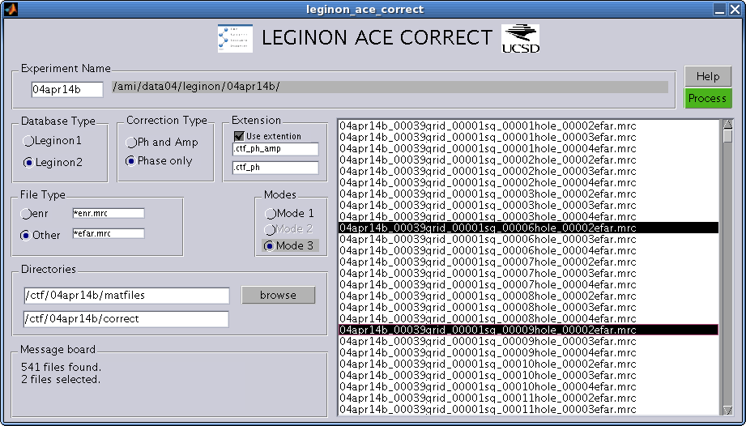

LEGINON ACE CORRECT DOCUMENTATION

Experiment Name : Name of the experiment. The directory corresponding to the experiment name is shown to the left experiment name.
Database Type: The two database types are Leginon1 and Leginon2 .
Correction Type: The user has the option of "Phase and Amplitude" correction and "Phase only" correction. The difference between the two is that in Phase only correction only the phase of the CTF is flipped whereas in Phase and Amplitude correction, Wiener filtering is done to correct both phase and amplitude. If the envelope function and noise spectrum parameters are not available then phase only correction is recommended. For example if the parameters calculated from far from focus images are used to correct near to focus images ( after adjusting for the defocus difference ), the envelope function and noise spectrum parameter estimates of far from focus images are not reliable for near to focus images. In such a case phase only correction is recommended.
Extension: The filename extension added to the corrected images. You may choose to save the corrected image with the same name as the input uncorrected image by unchecking the "Use extension" checkbox. Ensure that you are not writing to the input directory if you are not choosing an extension to avoid deletion of the original input images.
File Type: The type of file you need to correct. The file selection filter should be specified in the editable textboxes. Note that if you are using far from focus image parameters to correct near to focus images , the file filter specified in the "Other" editable box is used to load the mat files of far from focus image parameters. For example, if filename_enr.mrc is selected for correction and the correction is done using mode 2 ( see later ) so that the corresponding far from focus images parameters are used for correction, then the parameters of filename_efar.mrc are used for correcting filename_enr.mrc if the file filters for enr is "*enr.mrc" and "Other" is "*efar.mrc". If "*efar.mrc" is changed to "*fc.mrc" then the parameters are chosen from file filename_fc.mrc.
Modes: There are three modes of correction
for enr images. In mode 1 , the parameters of the CTF used for
correcting is estimated from enr image itself. In mode 2 the
parameters estimated for the far from focus images are used to correct
near to focus images after compensating for the defocus. In mode 3, the
parameters estimated for the focus images are used to correct near to
focus images after compensating for the defocus. There are two modes of
correction for the far from focus files. Mode 1 uses the parameters of
the far from focus images while mode 3 uses the parameters of the focus
images after compensating for the defocus. There is no mode 2.
Directories:
Message Board: Displays messages.
Help: Displays this page.
Process: Begins correcting the selected images.
File list: Displays the list of input files
to select from. Left mouse click selects the input file. To select
multiple files use CTRL + click and to select all files use CTRL + a
.
|
filename
|
Nominal Defocus of the file to be corrected |
Nominal Defocus of the file whose matfile was used for
correction |
Defocus 1 (used in correction) |
Defocus 2 (used in correction) |
time taken (seconds) |
|
filename.mrc |
0.6 |
2.0000 |
0.623382 |
0.5817 |
52.53 |